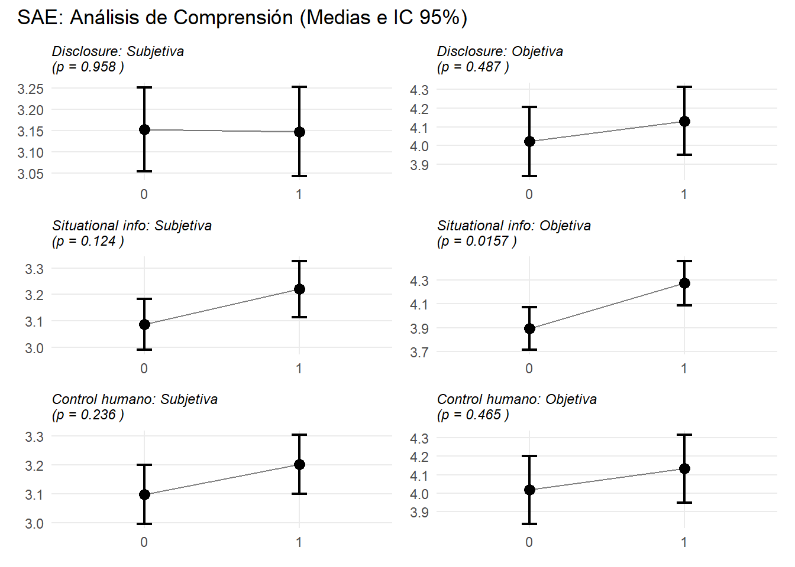
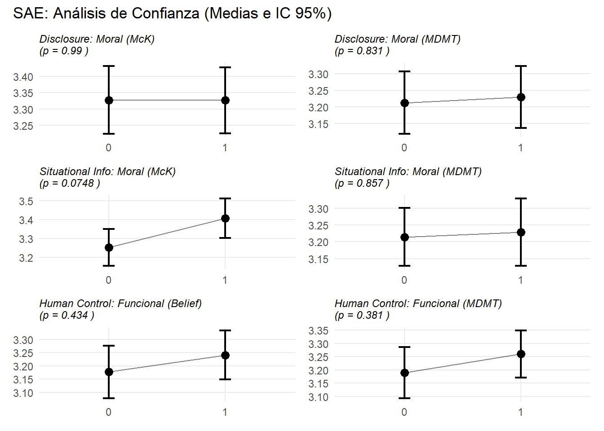
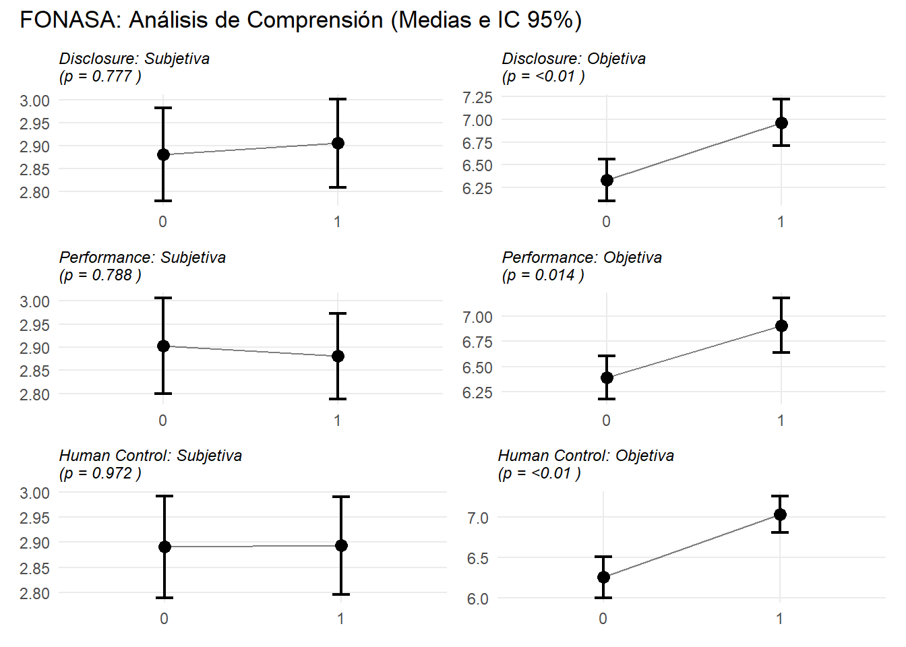
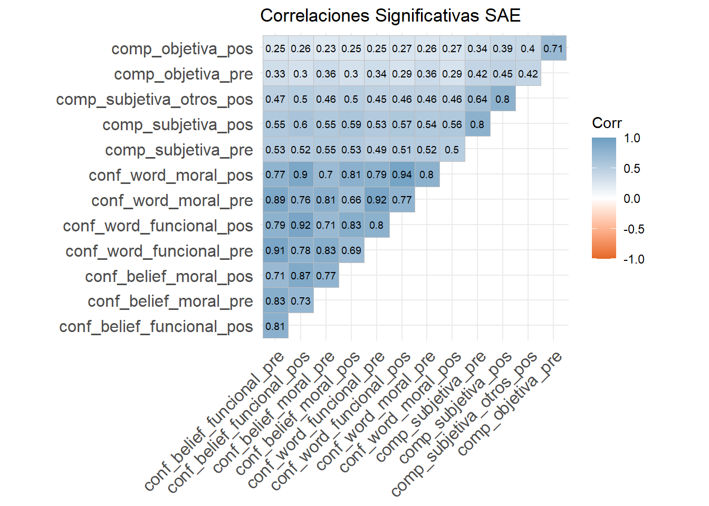
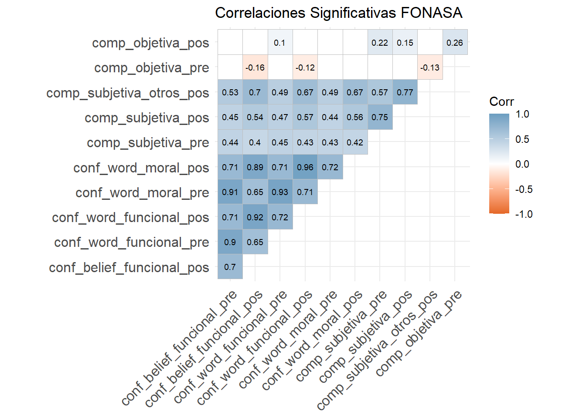

Reporte descriptivo inicial SAE FONASA
Descripción de los datos
Pruebas de t-test



Correlaciones
SAE muestra correlaciones fuertes y positivas entre sus medidas principales. Algunas superan el >.85 que da cuenta de un riesgo de colinealidad al que tener ojo. En FONASA no todas las correlaciones son significativas, llamando la atención las débiles relaciones de comprensión objetiva.
SAE


Revisión de colinealidad
Los valores VIF son muy bajos (>2.0), por lo que no existe una colinealidad problemática entre las variables.
| Modelo | disclosure | inf_situacional | control_humano | ai_disclosure_fonasa | performance_fonasa | control_humano_fonasa |
|---|---|---|---|---|---|---|
| Sistema de Admisión Escolar (SAE) | ||||||
| Belief Funcional Pre | 1.001 | 1.001 | 1 | NA | NA | NA |
| Belief Funcional Pos | 1.001 | 1.001 | 1 | NA | NA | NA |
| Belief Moral Pre | 1.001 | 1.001 | 1 | NA | NA | NA |
| Belief Moral Pos | 1.001 | 1.001 | 1 | NA | NA | NA |
| Word Funcional Pre | 1.001 | 1.001 | 1 | NA | NA | NA |
| Word Funcional Pos | 1.001 | 1.001 | 1 | NA | NA | NA |
| Word Moral Pre | 1.001 | 1.001 | 1 | NA | NA | NA |
| Word Moral Pos | 1.001 | 1.001 | 1 | NA | NA | NA |
| Comp Subjetiva Pre | 1.001 | 1.001 | 1 | NA | NA | NA |
| Comp Subjetiva Pos | 1.001 | 1.001 | 1 | NA | NA | NA |
| Comp Subjetiva Otros | 1.001 | 1.001 | 1 | NA | NA | NA |
| Comp Objetiva Pre | 1.001 | 1.001 | 1 | NA | NA | NA |
| Comp Objetiva Pos | 1.001 | 1.001 | 1 | NA | NA | NA |
| FONASA | ||||||
| Belief Funcional Pre | NA | NA | NA | 1.003 | 1.003 | 1 |
| Belief Funcional Pos | NA | NA | NA | 1.003 | 1.003 | 1 |
| Belief Moral Pos | NA | NA | NA | 1.003 | 1.003 | 1 |
| Word Funcional Pre | NA | NA | NA | 1.003 | 1.003 | 1 |
| Word Funcional Pos | NA | NA | NA | 1.003 | 1.003 | 1 |
| Word Moral Pre | NA | NA | NA | 1.003 | 1.003 | 1 |
| Word Moral Pos | NA | NA | NA | 1.003 | 1.003 | 1 |
| Comp Subjetiva Pre | NA | NA | NA | 1.003 | 1.003 | 1 |
| Comp Subjetiva Pos | NA | NA | NA | 1.003 | 1.003 | 1 |
| Comp Subjetiva Otros | NA | NA | NA | 1.003 | 1.003 | 1 |
| Comp Objetiva Pre | NA | NA | NA | 1.003 | 1.003 | 1 |
| Comp Objetiva Pos | NA | NA | NA | 1.003 | 1.003 | 1 |
Modelos multivariados
| sae conf belief funcional pre |
sae conf belief funcional pos |
sae conf belief moral pre | sae conf belief moral pos | sae conf word funcional pre |
sae conf word funcional pos |
sae conf word moral pre | sae conf word moral pos | sae comp subjetiva pre | sae comp subjetiva pos | sae comp subjetiva otros pos |
sae comp objetiva pre | sae comp objetiva pos | |
| Predictors | Estimates | Estimates | Estimates | Estimates | Estimates | Estimates | Estimates | Estimates | Estimates | Estimates | Estimates | Estimates | Estimates |
| (Intercept) | 3.08 *** (0.08) |
3.13 *** (0.08) |
3.22 *** (0.08) |
3.21 *** (0.09) |
3.16 *** (0.08) |
3.15 *** (0.08) |
3.21 *** (0.08) |
3.16 *** (0.08) |
3.02 *** (0.08) |
3.04 *** (0.09) |
2.99 *** (0.08) |
3.57 *** (0.14) |
3.79 *** (0.15) |
| disclosure [1] | 0.01 (0.08) |
0.02 (0.08) |
0.01 (0.09) |
-0.00 (0.09) |
-0.01 (0.08) |
0.03 (0.08) |
-0.04 (0.08) |
0.02 (0.08) |
0.06 (0.09) |
-0.01 (0.09) |
-0.02 (0.08) |
0.17 (0.15) |
0.10 (0.16) |
| inf situacional [1] | 0.11 (0.08) |
0.09 (0.08) |
0.20 * (0.09) |
0.16 (0.09) |
0.12 (0.08) |
0.06 (0.08) |
0.05 (0.08) |
0.01 (0.08) |
0.13 (0.09) |
0.13 (0.09) |
0.21 ** (0.08) |
0.54 *** (0.15) |
0.38 * (0.16) |
| control humano [1] | -0.02 (0.08) |
0.06 (0.08) |
-0.07 (0.09) |
0.09 (0.09) |
-0.05 (0.08) |
0.07 (0.08) |
-0.05 (0.08) |
0.08 (0.08) |
0.05 (0.09) |
0.10 (0.09) |
0.12 (0.08) |
-0.07 (0.15) |
0.12 (0.16) |
| Observations | 436 | 436 | 436 | 436 | 436 | 436 | 436 | 436 | 436 | 436 | 436 | 436 | 436 |
| R2 / R2 adjusted | 0.004 / -0.003 | 0.004 / -0.003 | 0.015 / 0.008 | 0.010 / 0.003 | 0.005 / -0.001 | 0.003 / -0.003 | 0.002 / -0.005 | 0.003 / -0.004 | 0.007 / 0.000 | 0.009 / 0.002 | 0.021 / 0.014 | 0.035 / 0.028 | 0.016 / 0.009 |
| AIC | 1131.981 | 1108.121 | 1144.189 | 1160.378 | 1098.453 | 1079.530 | 1107.064 | 1087.082 | 1148.277 | 1158.649 | 1072.905 | 1612.102 | 1669.558 |
| * p<0.05 ** p<0.01 *** p<0.001 | |||||||||||||
| fonasa conf belief funcional pre |
fonasa conf belief funcional pos |
fonasa conf belief moral pos |
fonasa conf word funcional pre |
fonasa conf word funcional pos |
fonasa conf word moral pre |
fonasa conf word moral pos |
fonasa comp subjetiva pre | fonasa comp subjetiva pos | fonasa comp subjetiva otros pos |
fonasa comp objetiva pre | fonasa comp objetiva pos | |
| Predictors | Estimates | Estimates | Estimates | Estimates | Estimates | Estimates | Estimates | Estimates | Estimates | Estimates | Estimates | Estimates |
| (Intercept) | 3.08 *** (0.08) |
2.63 *** (0.08) |
2.74 *** (0.09) |
3.15 *** (0.08) |
2.75 *** (0.08) |
3.15 *** (0.08) |
2.77 *** (0.08) |
2.93 *** (0.08) |
2.89 *** (0.08) |
2.82 *** (0.07) |
3.29 *** (0.11) |
5.74 *** (0.20) |
| ai disclosure fonasa [1] | -0.11 (0.09) |
-0.09 (0.09) |
0.04 (0.09) |
-0.09 (0.08) |
-0.07 (0.09) |
-0.16 (0.08) |
-0.11 (0.09) |
0.12 (0.09) |
0.03 (0.08) |
0.00 (0.08) |
0.35 ** (0.11) |
0.60 ** (0.20) |
| performance fonasa [1] | -0.02 (0.09) |
0.11 (0.09) |
0.10 (0.09) |
0.01 (0.08) |
0.14 (0.09) |
-0.00 (0.08) |
0.14 (0.09) |
-0.13 (0.09) |
-0.02 (0.09) |
-0.01 (0.08) |
0.08 (0.11) |
0.48 * (0.20) |
| control humano fonasa [1] | 0.06 (0.09) |
0.09 (0.09) |
0.06 (0.09) |
0.00 (0.08) |
0.04 (0.09) |
0.00 (0.08) |
0.04 (0.09) |
-0.05 (0.09) |
0.00 (0.08) |
0.02 (0.08) |
-0.09 (0.11) |
0.77 *** (0.20) |
| Observations | 436 | 436 | 436 | 436 | 436 | 436 | 436 | 436 | 436 | 436 | 436 | 436 |
| R2 / R2 adjusted | 0.005 / -0.002 | 0.008 / 0.001 | 0.004 / -0.002 | 0.003 / -0.004 | 0.008 / 0.001 | 0.009 / 0.002 | 0.010 / 0.003 | 0.010 / 0.003 | 0.000 / -0.007 | 0.000 / -0.007 | 0.024 / 0.018 | 0.064 / 0.058 |
| AIC | 1147.619 | 1169.839 | 1178.913 | 1094.947 | 1158.029 | 1127.821 | 1161.633 | 1161.496 | 1137.673 | 1053.663 | 1394.337 | 1896.681 |
| * p<0.05 ** p<0.01 *** p<0.001 | ||||||||||||